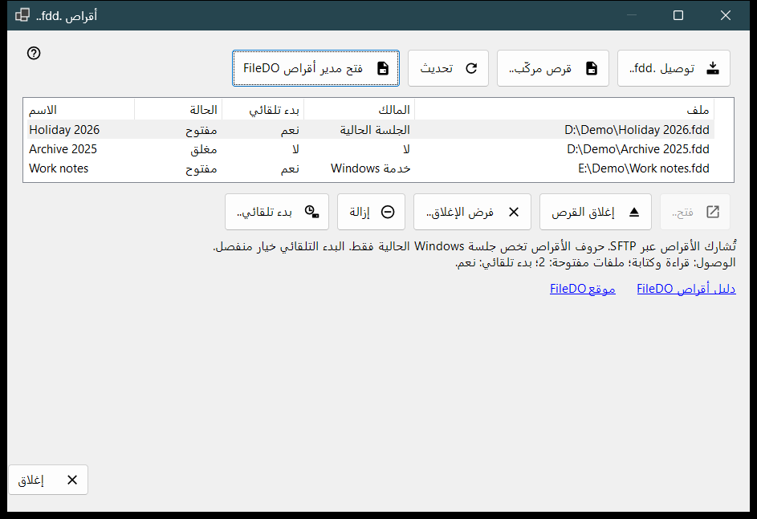
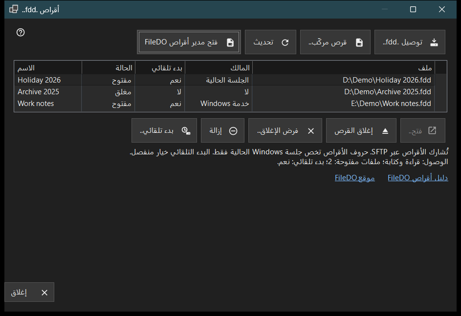

أقراص .fdd
الغرض من هذه النافذة
تعرض أقراص FileDO بصيغة .fdd التي يشاركها هذا الكمبيوتر عبر SFTP، وتتيح أوامر القرص اليومية: توصيل قرص، وفتحه أو إغلاقه، وإيقاف مشاركته، وتحديد ما إذا كان يُفتح مع الخادم. تُفتح النافذة من العنصر أقراص .fdd.. في قائمة الإضافة بالنافذة الرئيسية لـ Share Manager.


بهذا الترتيب
- اضغط الزر توصيل .fdd.. واختر ملف .fdd ثم أكّد مربع حوار الخيارات.
- حدّد القرص في القائمة؛ يعرض السطر أسفل القائمة وضع الوصول إليه والملفات المفتوحة والبدء التلقائي.
- استخدم الزر فتح.. لقرص مغلق، أو إغلاق القرص لقرص مفتوح، أو بدء تلقائي.. لتغيير الفتح التلقائي.
- اضغط تحديث لإعادة قراءة الحالة؛ وتعيد النافذة قراءتها أيضًا كل 10 ثوانٍ.
- اضغط إغلاق للخروج.
عناصر النافذة
قائمة الأقراص
يمثل كل صف قرصًا مشاركًا واحدًا: الاسم، والحالة (مفتوح، جارٍ الفتح، جارٍ الإغلاق، مغلق، مقفل، خطأ أو غير معروف)، وبدء تلقائي، والمالك، ومسار ملف .fdd في العمود ملف. يبيّن المالك من يُبقي القرص مفتوحًا: خدمة Windows أو الجلسة الحالية، أو لا إذا لم يفعل ذلك أحد. مرّر المؤشر فوق صف لرؤية مساره الكامل. يُحدَّد الصف الأول تلقائيًا، ويعرض السطر أسفل القائمة وصول القرص (للقراءة فقط أو قراءة وكتابة) وعدد الملفات المفتوحة وبدء التشغيل التلقائي. وعندما تعجز خدمة المشاركة عن مشاركة الأقراص تُخفى القائمة وأزرار الأوامر ويذكر هذا السطر السبب؛ وإذا كان FileDO نفسه قد ركّب القرص يظهر الرابط فتح مدير أقراص FileDO.
توصيل .fdd..
اختر ملف .fdd وسجّله للمشاركة. يطلب مربع حوار الخيارات الاسم، وخيار للقراءة فقط، وخيار فتح بعد التسجيل (محدد افتراضيًا). وللقرص المشفّر يطلب أيضًا كلمة المرور، ويمكنك منح القرص حرف محرك أو إبقاء الخيار بلا حرف - مشاركة فقط. يدوم الحرف حتى نهاية جلسة Windows الحالية فقط. إذا كان القرص لا يزال مفتوحًا في FileDO فاحفظ عمله وأغلقه هناك أولًا. وإذا نجح التسجيل ولم يُفتح القرص، تبيّن رسالة ذلك ويبقى القرص في القائمة مغلقًا.
قرص مركّب..
اختر محركًا جاهزًا في هذا الكمبيوتر، مثل قرص ركّبه FileDO بالفعل. تُغلق النافذة وتتابع النافذة الرئيسية خطوة إضافة المجلد المعتادة لذلك المحرك.
الفتح والإغلاق والإزالة
الزر فتح.. يعيد فتح قرص مغلق أو مقفل أو فاشل، ويطلب كلمة مرور القرص المشفّر. إغلاق القرص متاح للقرص المفتوح فقط؛ يفقد العملاء الوصول مؤقتًا وتُمنح الملفات المفتوحة حتى 30 ثانية لتُغلق. فرض الإغلاق.. يقطع الملفات المفتوحة فورًا، لذا قد تضيع بيانات غير محفوظة. إزالة توقف المشاركة: يُغلق القرص وتُحذف إعدادات بدء التشغيل التلقائي والمفتاح المخزَّن، ويبقى ملف .fdd. يطلب كل إجراء من هذه تأكيدًا أولًا، والإجابة الافتراضية هي إلغاء.
بدء تلقائي
يعرض العمود بدء تلقائي نعم أو لا لكل قرص دون تحديده. تعني الشرطة (-) أن خدمة المشاركة لا تدعم البدء التلقائي، وعندها يكون الزر بدء تلقائي.. معطّلًا. يبدّل الزر بدء تلقائي.. هذا الإعداد بعد التأكيد: التفعيل يفتح القرص مع الخادم، وتُحفظ كلمة مرور القرص المشفّر في مخزن Windows المحمي على هذا الكمبيوتر؛ والإيقاف يحذف ذلك المفتاح المخزَّن. الإعداد مستقل عن الحالة، فقد يكون البدء التلقائي مفعّلًا لقرص مغلق أو فاشل. وتعرضه أيضًا صفوف FileDO في قوائم النافذة الرئيسية.
الدليل والموقع وإغلاق
الزران دليل أقراص FileDO وموقع FileDO يفتحان دليل FileDO وموقعه الإلكتروني، وهو البرنامج الذي تأتي منه الأقراص. وإن لم يُعثر على مدير أقراص FileDO في هذا الكمبيوتر، تطلب النافذة تثبيت FileDO من موقعه. يغلق الزر إغلاق النافذة، ولا يمكن إغلاقها أثناء تنفيذ عملية على قرص.